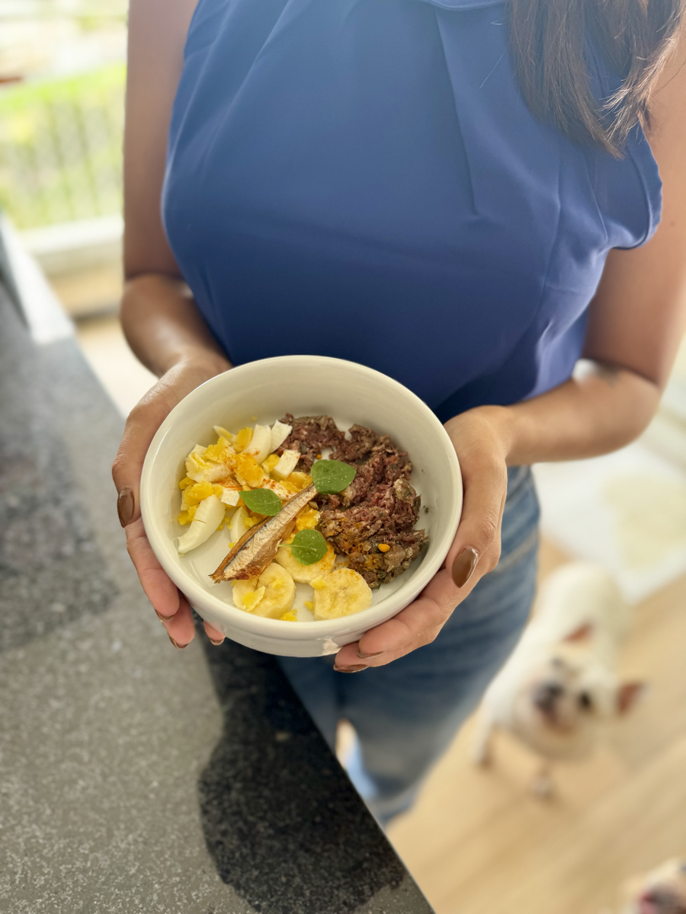

Aprenda a montar um cardápio natural, seguro e equilibrado — mesmo sem nenhuma experiência — com o método de uma veterinária que já transformou a alimentação de centenas de pets.

Muitos problemas de saúde começam na tigela. E a maioria dos tutores nem desconfia.
Seu pet se coça sem parar e você já tentou de tudo — shampoos, remédios, trocas de ração?
Digestão irregular, gases, vômitos frequentes. Sinais claros de que algo não está funcionando.
Mesmo com ração premium e suplementos caros, o pelo continua caindo e a pele ressecada.
Seu cachorro está acima do peso, sem disposição, envelhecendo antes do tempo.
"Quando a base muda… tudo muda!"
Médica Veterinária especialista em Medicina Integrativa, apaixonada por nutrição natural e por mostrar que alimentar bem o seu cachorro é mais simples do que parece.
"Eu vou te ensinar como se estivesse explicando para uma amiga."
Uma tigela equilibrada não é aleatória. Ela segue uma lógica com 6 grupos essenciais.
"Não é sobre quais alimentos você usa — é sobre como você combina eles."
35 minutos de conteúdo em vídeo, direto ao ponto.
A base científica para defender sua escolha com segurança — para você e para quem questionar.
→ Convicção para começarEntenda os 6 grupos da tigela equilibrada e a regra da metade que simplifica tudo.
→ Olhar a tigela e saber se está certaSaiba exatamente o que pode, o que nunca pode e o que depende — sem dúvidas no mercado.
→ Ir às compras com segurança totalPasso a passo para montar o cardápio da semana do seu pet, adaptado ao peso e porte.
→ Cardápio pronto na 1ª semanaOrganize sua rotina de preparo para fazer a semana inteira em 1-2 horas — sem estresse.
→ Semana inteira resolvida em 1 diaO plano gradual de 7-10 dias para seu pet se adaptar sem desconforto digestivo.
→ Transição suave e sem riscos190 páginas de conteúdo premium com design editorial profissional. Cada receita com ingredientes detalhados + tabela de porção por peso do seu pet.
Transição (para quem está começando) · Completas (o dia a dia ideal) · Sênior (para cães idosos)
Receitas cozidas e cruas, com tabelas de porção de 1kg a 40kg.
Além do curso completo e do e-book, você ainda leva:
Saiba exatamente a quantidade de cada alimento de acordo com o peso do seu pet — sem erro.
Comunidade exclusiva de tutores com suporte direto e troca de experiências.
ou 12x de R$ 29,42 no cartão
Cartão · PIX — Acesso imediato
🐾 Transforme a alimentação do seu pet
Quero Começar →
Tutores que já transformaram a tigela
+120 mil tutores confiam na Dra. Jhennifer para cuidar da alimentação dos seus pets.
"Minha Luna tinha coceira crônica há 2 anos. Em 30 dias de alimentação natural cozida, a pele dela melhorou 90% e reduzi o remédio de uso contínuo."
"O Thor perdeu 3kg em 2 meses e ficou com uma energia que eu não via desde filhote. O pelo dele brilha!"
"Eu tinha medo de errar as proporções. As orientações da Jhennifer me trouxe segurança total. Hoje monto os cardápios sozinha e a vida do Bento mudou totalmente."